Aryan Kumar Yadav
Crafting digital experiences with precision and passion.
I turn coffee into code
Hi, I'm Aryan! By day, I'm a developer who crafts sleek digital experiences, trains AI models, and politely asks machines to do what I want. By night... well, I mostly do the exact same thing, just in dark mode.
I specialize in Machine Learning and full-stack development. My main skills include transforming complex ideas into elegant code, and frantically Googling the same Stack Overflow question for the 14th time. When I'm not optimizing my code so it runs 0.001 seconds faster, I'm always looking for the next exciting project. Let's build something awesome!
My Skills
Some of my recent work
App Review Sentiment & Urgency Analysis
Improved sentiment accuracy from 63% to 84% and achieved 97% urgency accuracy using a GloVe + BiLSTM + Attention + TF-IDF hybrid model. Deployed via FastAPI with fallback handling.
Pothole Detection & Geo-tagging System
Trained a YOLOv8 model for pothole detection and deployed it for real-time geotagged inference with a FastAPI backend, local storage fallback, and GIS map-based visualization.
Credit Risk Scoring System
Built an end-to-end ML pipeline to predict loan default probability using financial data. Applied explainable AI using SHAP to identify key risk drivers and deployed scalable REST APIs.
Behavioral Biometrics Dataset
Developed a mobile and web system to collect behavioral biometrics (keystroke dynamics, touch pressure) and applied ML models to analyze user interaction patterns for identity verification.
My professional journey
Experience
Software Development Intern
NetZero Aqua (Remote)
Developed an interactive dashboard for extracting and visualizing Sentinel and Landsat data using Microsoft Planetary Computer APIs. Enhanced the existing web app by adding new functional UI components, and implemented mathematical formulas to compute water quality parameters.
Education
B.Tech in Computer Science and Technology
VIT Bhopal University (Bhopal, India)
CGPA: 9.09
Class XII
Sri Chaitanya Junior College (Visakhapatnam, India)
BIEAP CGPA: 8.7
Class X
DAV Centenary Public School (Visakhapatnam, India)
CBSE CGPA: 9.2

LET'S CREATE
SOMETHING
GREAT TOGETHER!
I'm available for full-time roles & freelance projects.
I'm always open to discussing new projects, creative ideas, or opportunities to be part of your vision.